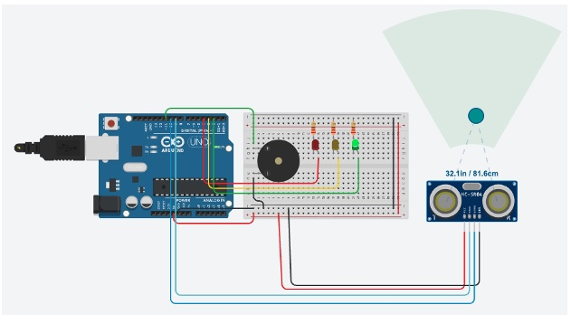
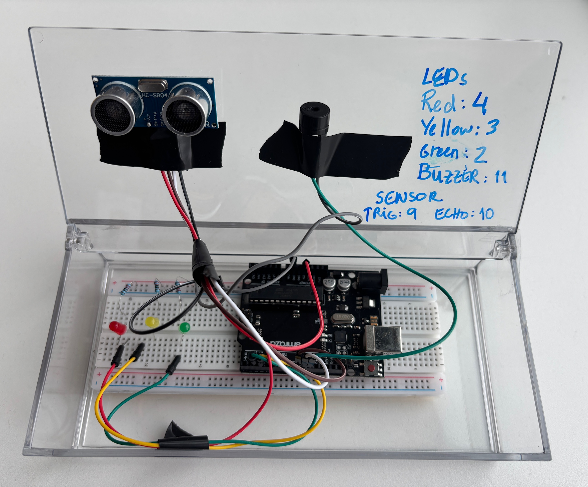

Course: TECH 117 (Computer Engineering Technology, Winter 2026)
Instructor: Ph.D. Ana Rodrigues
Team Members:
The project is to build a Smart Alarm Bed System using an Arduino Uno. It is connected to SDG 3: Good Health and Well-Being from the United Nations goals, focusing on improving daily routines and sleep habits. The system will activate an alarm at a specific time using a real-time clock, produce sound through a buzzer, and control a servo motor to move the bed. It will operate in three phases: first, a buzzer sound; second, the bed shaking left and right; and third, the bed tilting to about 45 degrees. A button will also be included to allow the user to stop the system.
The project will be considered successful if the alarm triggers at the correct time and each phase runs in the correct order without skipping. The servo motor should move properly during both shaking and tilting, and the buzzer should function correctly in all phases. The system should also stop immediately when the button is pressed and run smoothly without errors.
There are several challenges that may make the project harder to complete. These include limited time to build and test the system, difficulty in constructing the mini bed structure, and possible programming bugs or timing errors. There may also be issues when connecting all the components together.
To deal with these challenges, alternative plans can be used. The movement can be simplified by only using the tilting function instead of shaking. Each component, such as the buzzer, servo motor, and RTC, can be tested separately before combining them. A smaller or lighter model can be used to make it easier for the servo to move the structure. Timing can also be adjusted if the phases do not work correctly.
The ultrasonic sensor measures distance; the Arduino activates LEDs and the buzzer according to distance thresholds.

| Item | Qty | Unit Price | Subtotal | Source |
|---|---|---|---|---|
| Arduino Uno Rev3 | 1 | $27.60 | $27.60 | Arduino Store |
| HC-SR04 Ultrasonic Sensor | 1 | $3.95 | $3.95 | Adafruit |
| Passive Buzzer | 1 | $0.95 | $0.95 | SparkFun |
| LEDs (Red, Yellow, Green) | 3 | $0.20 | $0.60 | Adafruit |
| 220 Ω Resistors | 3 | $0.03 | $0.09 | Adafruit |
| Breadboard | 1 | $4.95 | $4.95 | Adafruit |
| Jumper Wires | 1 set | $3.50 | $3.50 | SparkFun |
| Estimated Total | $41.64 | — | ||
The following image shows the assembled prototype on a breadboard.

The following Arduino code controls the system, lighting LEDs and activating the buzzer based on distance readings from the HC-SR04 sensor.
// Collision Warning System with Distance Sensor (HC-SR04)
// Author: Ana Rodrigues
// Oct 2, 2025
// Object is farther than 50cm: Green LED lights up
// Object is closer than 50 cm, but more than 10cm away: Yellow LED lights, buzzer plays 300Hz tone
// Object is closer than 10cm: Red LED lights up, buzzer plays 500Hz tone
//LED pins
const int greenLED = 2;
const int yellowLED = 3;
const int redLED = 4;
// Ultrasonic sensor pins
const int trigPin = 9;
const int echoPin = 10;
// Passive buzzer pin
const int buzzer = 11;
void setup() {
pinMode(greenLED, OUTPUT);
pinMode(yellowLED, OUTPUT);
pinMode(redLED, OUTPUT);
pinMode(trigPin, OUTPUT);
pinMode(echoPin, INPUT);
Serial.begin(9600);
}
void loop() {
// Measure distance
digitalWrite(trigPin, LOW);
delayMicroseconds(2);
digitalWrite(trigPin, HIGH);
delayMicroseconds(10);
digitalWrite(trigPin, LOW);
long duration = pulseIn(echoPin, HIGH);
long distance = duration * 0.034 / 2;
Serial.print("Distance: ");
Serial.print(distance);
Serial.println(" cm");
//Error in measurement:
if (distance <= 0)
return;
//Too close:
if (distance <= 10) {
digitalWrite(greenLED, LOW);
digitalWrite(yellowLED, LOW);
digitalWrite(redLED, HIGH);
tone(buzzer, 500); // Play 500Hz tone
return;
}
//Midrange:
if (distance <= 30) {
digitalWrite(greenLED, LOW);
digitalWrite(yellowLED, HIGH);
digitalWrite(redLED, LOW);
tone(buzzer, 300); // Play 300Hz tone
return;
}
//Normal status:
digitalWrite(greenLED, HIGH);
digitalWrite(yellowLED, LOW);
digitalWrite(redLED, LOW);
noTone(buzzer); // stop buzzer
delay(100);
}
The system effectively demonstrates distance-based alerting using Arduino. It’s affordable, educational, and sustainable through reusable components.